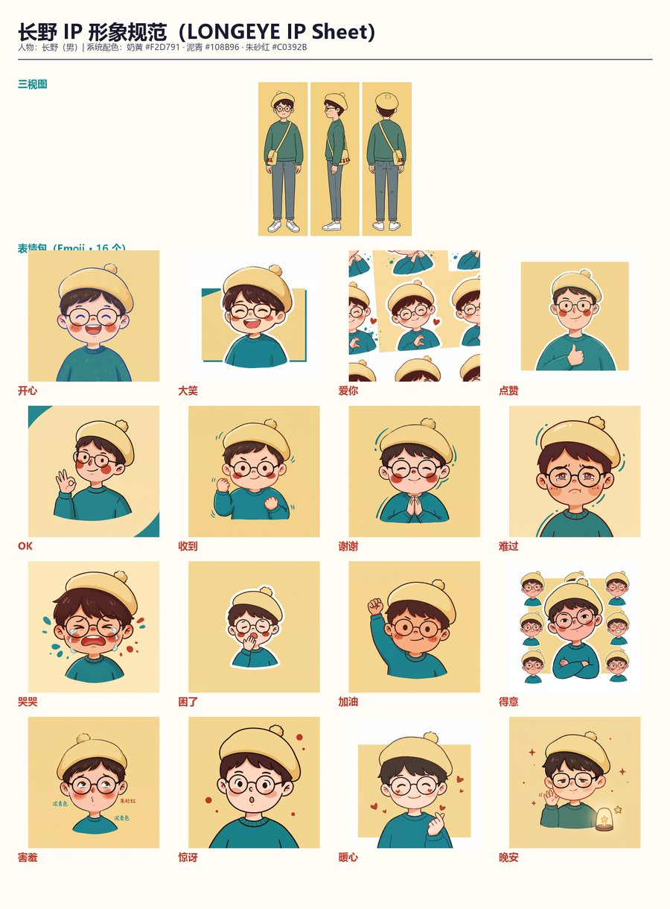
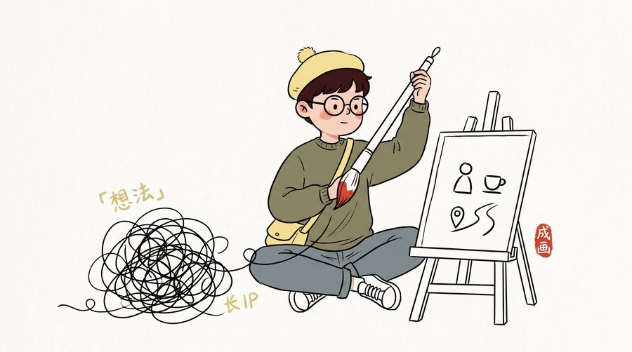
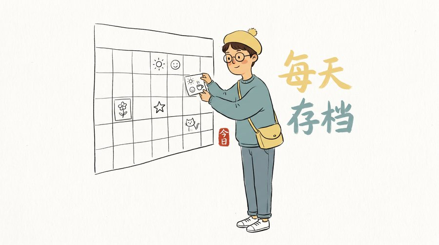
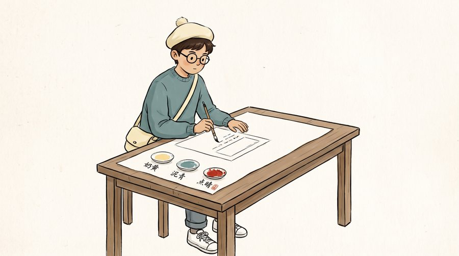
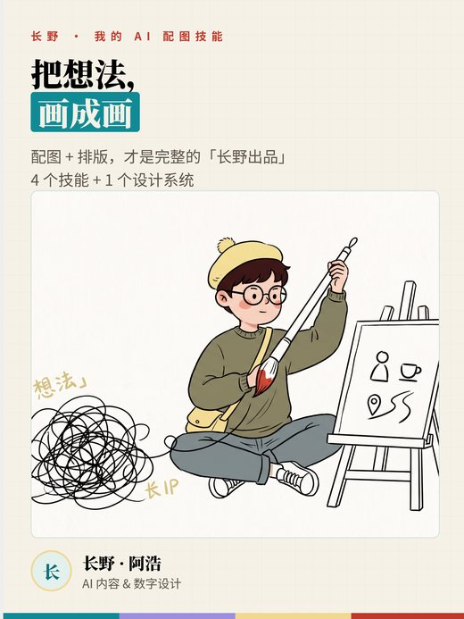

🧭 核心规范 · 2026-08
changye-ip-spec · 长野设计系统

长野 IP 的唯一权威规范：修长版形象、三色规范、三视图、表情、动作、应用场景与 QA。所有生图/发布技能校准形象与调性的基准。
用法 · 要画任何长野图前，先读它校准
喂：“生成长野标准形象图” → 出：符合三色 / 形象 / 调性的 IP 图
github.com/Excalidraw2026/changye-ip-spec ↗
🎨 生图 · 1.0
changye-illustrations · 正文配图

长野 1.0 手绘风中文正文配图：为文章、帖子、工作流文档、方法论生成"长野怪诞手绘"配图。喂内容即出图。
用法 · 文章配图
喂：“给这篇《把想法画成画》配封面” → 出：16:9 长野手绘封面
github.com/Excalidraw2026/changye-illustrations ↗
🎨 生图 · 2.0
changye-scenes · 场景图
长野 + 真实物件 + 物理动作 + 留白叙事。默认 16:9 正文配图，另有彩蛋模式 / 长卷故事图。互联网打工人共鸣图的首选。
用法 · 场景/共鸣图
喂：“画一张打工人加班的场景” → 出：长野 + 办公桌 + 物件的 16:9 图
github.com/Excalidraw2026/changye-scenes ↗
🌅 生图 · 每日
changye-daily · 每日小画

把"每天"画成一幅治愈的日系手绘小插画——一眼看完就想起"今天很棒、大致干了什么"。长野 Q 版 IP + 三色规范。
用法 · 每日一画
喂：“今天画一张，记录今天的好” → 出：治愈日系小画
github.com/Excalidraw2026/changye-daily ↗
🖌 设计系统
changye-design-system · HTML/卡片系统

长野排版设计系统：HTML 模板、公众号图文卡片、小红书卡片、落地页。与 ip-spec 配合，做长野风格的视觉呈现。
用法 · 视觉呈现
喂：“做一张长野风格的小红书卡片” → 出：3:4 卡片 HTML → 截图成图
github.com/Excalidraw2026/changye-design-system ↗
🚀 发布 · 总调度
changye-post-multi · 多平台发布

把长野配图发到公众号 / 微博 / 小红书 / 抖音。总调度器 + 每平台独立模块，说一句"发小红书"就调度对应模块自动发布。
用法 · 发平台
喂：“把这篇发小红书 + 抖音” → 调度模块 → 自动生成对应形态并发布
github.com/Excalidraw2026/changye-post-multi ↗